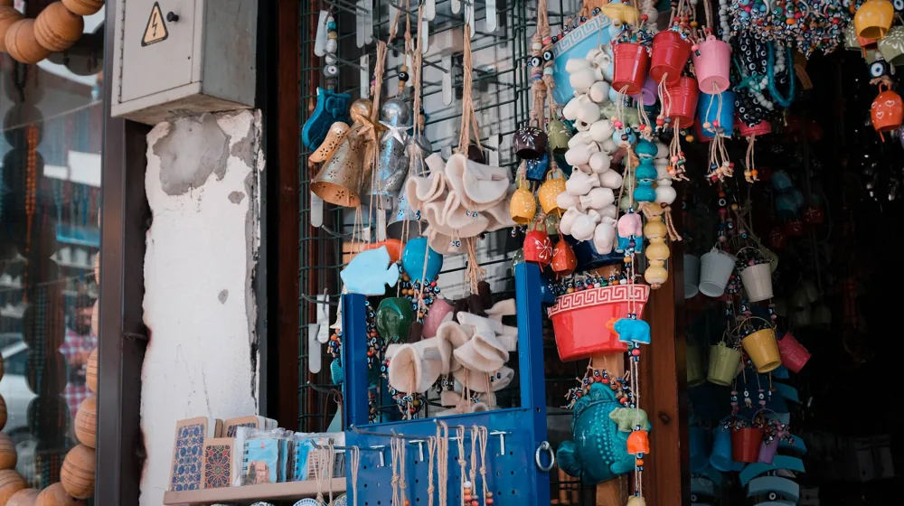

공예 선물, 실패 없는 성공법? 후기와 주의사항 완벽 정리
사진: MART PRODUCTION / Pexels (무료 이미지, 출처 표기)
왜 공예 선물이 특별할까요?

특별한 날, 소중한 사람에게 기억에 남는 선물을 하고 싶으신가요? 흔한 기성품 대신 세상에 하나뿐인 '공예 선물'을 고민하는 분들이 많습니다. 하지만 막상 고르려니 막막하고, 혹시나 선물을 받고 실망하지 않을까 걱정될 수 있습니다. 이 글에서는 공예 선물 선택의 어려움을 해결하고, 받는 사람과 주는 사람 모두 만족할 수 있는 성공적인 선물 고르기 방법과 실제 후기를 바탕으로 한 주의사항을 알려드립니다.
공예품은 대량 생산되는 제품과는 다릅니다. 작가의 손길과 오랜 시간의 노력이 담겨 있어 그 자체로 특별한 가치를 지닙니다. 선물을 받는 사람은 단순한 물건을 넘어, 제작자의 스토리와 정성을 함께 느낄 수 있습니다. 이러한 희소성 덕분에 받는 이에게 깊은 감동을 선사하며, 오랫동안 간직할 수 있는 의미 있는 선물이 됩니다.
성공적인 공예 선물 고르기 3단계
공예 선물을 고를 때는 다음 3단계 과정을 따라가면 실패 확률을 크게 줄일 수 있습니다.
가장 먼저 받는 사람의 취향과 라이프스타일을 면밀히 살펴보세요. 평소 어떤 색상, 디자인을 선호하는지, 실용적인 물건을 좋아하는지 아니면 장식적인 오브제를 좋아하는지 파악하는 것이 중요합니다. 예를 들어, 차를 즐겨 마시는 사람에게는 직접 만든 찻잔 세트가, 인테리어에 관심이 많은 사람에게는 독특한 세라믹 화병이나 조명 작품이 좋은 선택이 될 수 있습니다.
선물을 위한 예산을 설정하고, 이에 맞춰 공예품의 제작 방식을 고려해야 합니다. 개인 작가가 직접 손으로 빚어 만든 순수 수공예품은 가격대가 높지만 그만큼 가치가 높습니다. 반면, 공방에서 일정 부분을 기계의 도움을 받아 제작되거나 여러 개가 생산되는 반수공예품은 비교적 합리적인 가격으로 좋은 품질의 작품을 만날 수 있습니다. 어떤 방식이든 충분한 상담을 통해 제작자의 노고를 이해하는 것이 중요합니다.
마지막으로 구매하려는 공예품이나 작가, 판매처에 대한 후기를 꼼꼼히 확인하는 것이 좋습니다. 특히 온라인 구매 시에는 실제 사용자들의 사진 후기나 배송 상태, 판매자의 응대 등을 살펴보면 신뢰도를 가늠할 수 있습니다. 지인이나 다른 구매자들의 경험담은 현실적인 기대치를 설정하는 데 도움이 됩니다.
후회 없는 선택을 위한 재료별 특징과 관리법
다양한 공예 재료들은 각기 다른 매력과 관리법을 가지고 있습니다. 선물을 고르기 전에 재료의 특성을 이해하면, 받는 사람이 더 오래 소중히 간직할 수 있도록 도울 수 있습니다.
각 재료의 특성을 고려하여 선물을 고른다면, 받는 사람이 선물에 대한 애착을 더욱 키울 수 있습니다.
공예 선물 구매 전 꼭 확인해야 할 체크리스트
공예품은 일반 상품과 달리 수제작 특성상 일반적인 구매 절차와 다를 수 있습니다. 예상치 못한 문제 발생을 막기 위해 다음 사항들을 미리 확인하는 것이 좋습니다.
- 환불 및 교환 정책: 수제작 특성상 일반 상품보다 환불/교환이 어려울 수 있습니다. 구매 전 판매처의 정책을 명확히 확인하세요.
- AS 가능 여부: 고가이거나 섬세한 작품의 경우, 추후 수리나 보수가 가능한지 여부와 비용을 문의해두면 좋습니다.
- 포장 및 배송 상태: 특히 깨지기 쉬운 도자기나 유리 공예품은 안전한 포장과 배송 방법을 미리 확인해야 합니다. 파손 보험 가입 여부를 묻는 것도 방법입니다.
- 작가 이력 및 작품 인증: 고가이거나 희소성 있는 작품을 구매할 경우, 작가의 이력이나 작품의 진품 여부를 증명하는 인증서 제공 여부를 확인하는 것이 좋습니다.
- 세척 및 관리 방법: 선물하기 전에 해당 공예품의 올바른 세척 및 관리 방법을 미리 숙지하고, 필요하다면 선물과 함께 전달하면 좋습니다.
공예 선물, 이런 점은 주의하세요
공예 선물은 그 특별함만큼이나 몇 가지 주의할 점이 있습니다. 이를 미리 알고 접근한다면 불필요한 오해나 실망을 줄일 수 있습니다.
첫째, 공예품은 작가의 개성과 손맛이 담겨있어 기성품처럼 완벽하게 '획일적'이지 않을 수 있습니다. 미세한 크기 차이나 색상 편차, 의도된 비대칭 등 수제작 특유의 흔적이 있을 수 있는데, 이를 '결함'으로 오해하지 않도록 주의해야 합니다. 이러한 불완전함 속에서 발견되는 아름다움이 바로 공예품의 매력이기도 합니다.
둘째, 개인 작가나 소규모 공방에서 제작되는 공예품은 대량 생산품과 가격 기준이 다릅니다. 재료비 외에 작가의 시간, 기술, 예술성이 가격에 반영되므로, 일반 상품과 단순 비교하기보다는 그 가치를 인정하는 마음으로 접근하는 것이 좋습니다. 2026년 9월 기준으로 공예품 시장은 다양한 가격대의 작품이 공존하므로, 미리 충분히 알아보고 예산에 맞는 작품을 선택하는 것이 현명합니다.
셋째, 특정 작가나 공방의 경우 예약 주문 방식으로만 판매하거나 제작 기간이 오래 걸릴 수 있습니다. 선물을 전달해야 하는 날짜에 맞춰 여유를 두고 주문하는 것이 중요합니다. 급하게 구매하려다 선택의 폭이 좁아지거나 원하는 작품을 놓칠 수 있으니, 최소 2~4주 전부터 알아보는 것을 권장합니다. 정확한 사항은 공식 판매처나 해당 작가에게 직접 문의하여 다시 확인하시길 권장합니다.
공예 선물은 단순한 물건을 넘어, 마음을 담아 전하는 예술 작품입니다. 위에서 제시된 가이드라인과 주의사항을 참고하여 받는 사람에게 오래도록 기억될 특별한 선물을 준비해 보시길 바랍니다. 당신의 진심이 담긴 공예품은 분명 받는 이에게 큰 기쁨이 될 것입니다.
🔗 이 글도 함께 보면 좋아요: 에어프라이어 완벽 활용 가이드: 초보자도 실패 없는 핵심 비법 5가지
관련 추천 상품
수공예품 선물, 핸드메이드 소품 관련 인기 상품 보러가기
이 포스팅은 쿠팡 파트너스 활동의 일환으로, 이에 따른 일정액의 수수료를 제공받습니다.